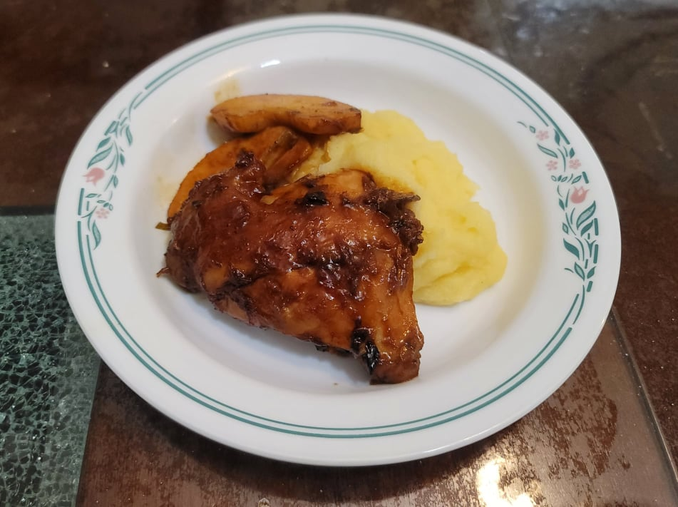

Rabbit Braised with Apples and Mint

Ingredients:
- 3 lb Rabbit, cut into pieces
- Salt, to taste
- 2 tbsp Sunflower oil
- 2-3 Wild onions or 1 Onion, diced
- 3 Sage leaves
- 4 Mint leaves
- 1/2 cup Apple cider
- 1/2 cup Rabbit stock
- 2 tbsp Maple syrup
- 1 tbsp Maple vinegar, or substitute Apple cider vinegar with some Maple syrup
- 2-3 Crabapples or 1 large apple, cored and sliced
Instructions:
- Season the rabbit pieces with salt to taste. Heat the oil in a large pan over medium heat. Sear the rabbit pieces in batches, about 5 minutes per side. Remove from the pan and reserve.
- Add the onions, sage, and mint and cook until the onions become translucent, about 3-5 minutes.
- Add the cider and stock to the pan and scrape up any dark bits sticking to the bottom of the pan.
- Mix in the maple syrup and vinegar. Then add back in the rabbit. Cover and bring the heat to medium low. Braise for 45-60 minutes, or until tender, turning occasionally.
- Uncover and add in the apples. Continue to cook until the sauce has thickened to a desired consistency. Taste and adjust seasonings.
- Serve with wild rice or cornmeal mush.